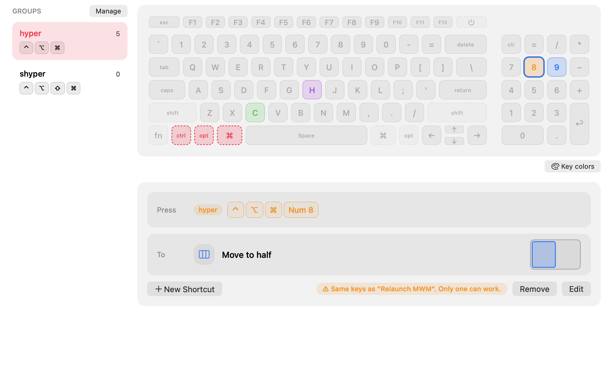
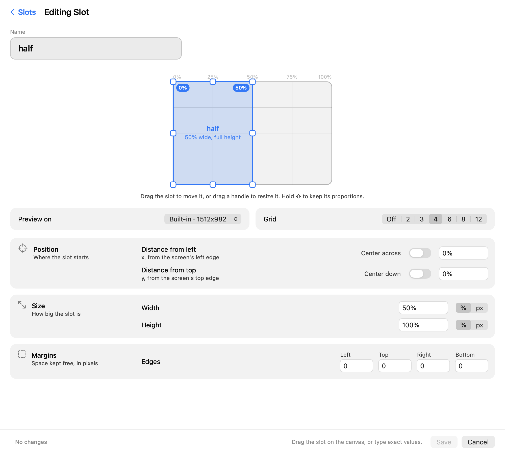
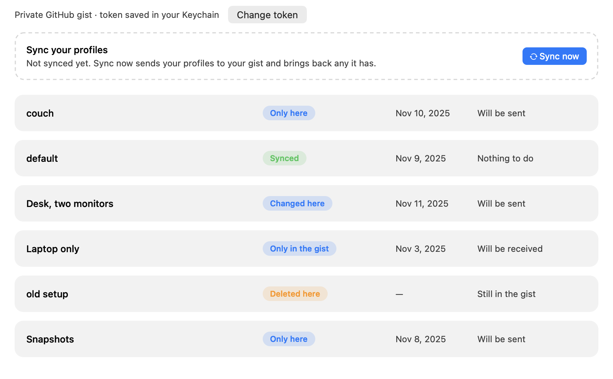

See every shortcut
A keyboard map shows what each key does in each modifier group. Keys are colored by what they do, and conflicts and keys macOS keeps are flagged before they cause trouble.
MWM is a free window manager for macOS. Snap windows to slots, send them across displays and save whole desktops as snapshots, all from the keyboard.
Set it up once in a friendly window. After that, MWM stays in your menu bar and out of your way.
See every shortcut on a Mac keyboard. Keys are colored by what they do, and conflicts and keys macOS keeps are flagged.
Name any area of the screen (halves, thirds, quarters or your own) and move a window there with one key.
Give each screen a name that sticks, and send windows to the right one even after you unplug and reconnect.
Save where every window is, then bring the whole desktop back with a click or a shortcut.
Save and restore snapshots, restore a backup, open any page and reach your shortcuts without opening a window.
Keep a profile for each desk and switch between them. Sync them, and your snapshots, with a private GitHub gist to use them on another computer.
MWM tells you when a new version is out and can install it for you, after checking the download.
Plain readable files in ~/.mwm. No accounts, and nothing runs from it. MWM only looks at GitHub for new versions, and you can turn that off. Open source under GPLv3.
A keyboard map shows what each key does in each modifier group. Keys are colored by what they do, and conflicts and keys macOS keeps are flagged before they cause trouble.

Pick a modifier group such as ⌃⌥⌘, click a key, and say what it does: move a window to a slot, focus an app, throw it to the next screen, show window hints.

Drag the edges of a slot on a picture of your screen, or type exact percentages. Nineteen presets come built in; add as many of your own as you like.

A snapshot remembers every window and the screens it was on. Make one for work, one for a call, one for the couch, and restore it in a click, from the menu bar, or with a shortcut.

Keep every profile, such as the desk with two monitors or the laptop on its own, and your snapshots in a private GitHub gist. One button sends what changed here and brings back what changed there.

The short version. The quick start has every step.
Open MWM.dmg, drag MWM to Applications and open it. It lives in the menu bar. macOS may warn that it isn't notarized; here's how to open it.
macOS needs your permission to move other apps' windows. MWM asks on first launch. Windows not moving?
Choose Settings… from the menu bar, open Bindings, press New Shortcut, record the keys and say what it does. Or start from an example configuration.
Until you add your own, MWM comes with a set of defaults. A few of them:
| Keys | What it does |
|---|---|
| ⌥ + arrows | Resize the focused window by 10% |
| ⌘ + arrows | Focus the window in that direction |
| ⌘ + esc | Show window hints: press a letter to jump to that window |
| ⌥⇧ + F S T N M C | Jump to Finder, Safari, Terminal, Notes, Mail or Calendar |
See all the defaults. Your own shortcuts live in ~/.mwm, described in the documentation.
The things people ask first. More in the documentation.
Almost always Accessibility. See troubleshooting.
MWM is signed but not yet notarized by Apple, which needs a paid developer membership. The quick start shows how to open it once; macOS remembers your choice.
In plain-text files in ~/.mwm, one for each profile. They stay on your Mac unless you sync them with your own private gist. See the configuration file.
Yes, with one exception: JavaScript configurations can't be converted. See moving from Slate.
Turn on Launch MWM at Login in the menu bar menu. To remove it, quit MWM, drag it from Applications to the Trash and delete the ~/.mwm folder if you want your settings gone too.